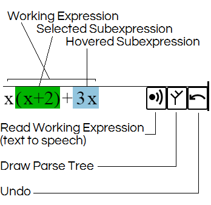
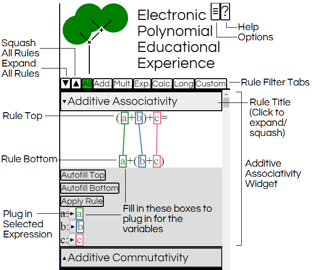

Welcome to EPEE, the Electronic Polynomial Educational Experience! This demo is designed to:
Provide a sense of what the finished product will feel like to use.
Provide an environment to experiment with the interface.
Provide an environment to experiment with code structure.
Goals
Capture key algebraic concepts within the mechanics of the software:
All of algebra can be done using a small-ish set of very precise rules.
An algebra problem can be solved in a line-by-line fashion with each line following from the previous line by one of the rules.
When solving an algebraic problems, some rules, while valid, can lead down dead-ends or otherwise not help in solving the problem.
If you have an algebraic equation with a generic variable in it, you can plug whatever you like in for that variable to get another true equation.
Example: If you know that x*x = x2, then you also know that: 3*3 = 32, y*y = y2, and (x+1)*(x+1) = (x+1)2.
If you know that two algebraic expressions are equal, you can replace any instance of one as a subexpression with the other.
Example: If you know that 1+2 = 3, then you also know that: x1+2=x3, but you don't know that 1+2x = 3x, because 1+2 does not show up as a subexpression of the latter.
Facilitate self-discovery of problem solving techniques.
Provide intrinsic rewards (mainly efficiency improvements) for:
Learning what rules are available
Learning the names of rules
Learning how to recognize subexpressions
Learning what steps to take to solve problems
Solving problems
Walkthrough
To the bottom left of the screen you should see the expression x(x+2)+3x. This is the current working expression. Hover your mouse over parts of the expression to highlight selectable subexpressions in blue.
Move your mouse between the first x and ( to highlight x(x+2) and click to select this subexpression.
To the right of the screen you will see a list of algebra rules, starting with Additive Associativity. Click the title of the rule to shrink the Additive Associativity widget since we won't be using it right away.
Above the list of rules is a line of tabs. Click the tab with the upwards pointing triangle (Squash All) to hide all the rule widgets.
In the list of rules, find and click Left Distributivity this will open up the Left Distributivity widget.
The Left Distributivity rule is that a(b+c) = ab + ac, and this is true no matter what you replace a, b, and c by. Type x into any of the boxes that say a with green borders. This will enter x into all such boxes.
Type x into any of the boxes that say b with blue borders.
Type 2 into any of the boxes that say c with pink borders.
Entering these values into the rule has given us a specific fact: x(x+2) = x*x+x*2. Make sure x(x+2) is still selected in green in the bottom left, and click Apply Rule in the Left Distributivity widget to apply the rule to this part of the expression.
The expression in the bottom left should now read (x*x + x*2)+3x and a history of your work should have shown up above it.
The tabs above the rules allow you to focus in on a specific kind of rules. Click on the Add. tab to show just those rules related to addition.
Click Additive Associativity to open up the Additive Associativity widget. Our goal is to rework the parentheses of our current expression so we can combine the x*2 and 3x, and Additive Associativity can do this for us.
Type x*x into any of the boxes that say a and have a green border.
Typing in all these formulas can get tedious. Select the subexpression x*2 by clicking on the dot between them, and then click the button with the rightward pointing triangle next to b: beneath the Apply Rule button. This should automatically enter x*2 into all the boxes corresponding to b.
Select the subexpression 3x by clicking between the 3 and the x.
Click the button with the rightward pointing triangle next to c: to enter it into the boxes for x.
Select the entire expression (x*x+x*2)+3x and click Apply Rule.
Open up the Multiplicative Commutativity widget under the Mult. tab.
Select the subexpression x*2. Click the Autofill Top button in the Multiplicative Commutativity widget. This will attempt to fill in the boxes in the rule automatically, and should enter x into the green boxes and 2 into the blue boxes.
Click Apply Rule.
Open up the Right Distributivity widget under the Mult. tab.
Select the subexpression (2x+3x).
Click Autofill Bottom.
Click Apply Rule.
Open up the Calculate Sum widget under the Calc. tab.
Select the subexpression (2+3).
Click Autofill Top and then Apply Rule.
The current expression in the bottom left of the screen should read x*x+5x. We'd like to rewrite x*x as x^2, but this is such a useful fact that we'd like to make a new rule out of it!
Click the Options button in the top right corner of the screen. It will have three horizontal lines.
Where it says Enter a new expression: type in x*x and click Save and Start Over.
Close out of the options window by clicking the X in the top left corner of the options window.
Open up the One Exponent widget under the Exp. tab.
Select the first x in the current expression.
Click Autofill Bottom and then Apply Rule.
Select the second x in the current expression.
Click Autofill Bottom and then Apply Rule.
The current expression should now read x1x1.
Open up the Product Rule widget under the Exp. tab.
Select the entire current expression x1x1.
Click Autofill Top and then Apply Rule.
Open up the Calculate Sum widget under the Calc. tab.
Select the exponent 1+1.
Click Autofill Top and then Apply Rule.
Since we were able to get from x*x to x^2, we've convinced the program that these are equal. We can now make this into a new rule. Open back up the Options window.
Under Current derivation: next to x*x=x^2 click Make into New Rule. Enter the name "Squaring" when the prompt window shows up.
Now let's go back to our previous problem. Under Saved Derivations, click Save/Load and close out of the Options window.
Open up the Squaring widget under the Custom tab.
Select x*x.
Click Autofill Top and then Apply Rule.
Huzzah! We now have computed that x(x+2)+3x = x2+5x.
The Workspace


Using Rules
Each rule is based on a fact of algebra. For instance, Additive Associativity (see image above) is based around the fact that (a+b)+c=a+(b+c).
This is a specific fact, but it's also true regardless of what you plug in for a, b, or c.
The rule widgets allow you to plug in whatever you like for these variables by typing it in to any of the boxes corresponding to that variable: in the top of the rule, in the bottom of the rule, or at the bottom of the widget.
Once you've filled in the rule, you'll know that two specific expressions are equal. If the selected subexpression matches one of those two, either the top or the bottom,
click on the Apply Rule button to replace the selected subexpression with the expression it is equal to.
Efficiency Improvements
Typing values into rules by hand is tedious. At the bottom of the rule widget is a series of buttons that will let you automatically enter the selected expression into the text box for a variable. These are marked by a rightward pointing triangle.
You can also automatically fill in the entire top or bottom of a rule using the Autofill Top and Autofill Bottom buttons. These will attempt to fill in the boxes so that the top or bottom line of the rule matches the selected expression.
Long Rules
This system was originally designed to handle only binary operations: adding or multiplying together two expressions at a time. However, being able to say that (x+1)(x+1)=x2+2x+1 is preferable to having to say that (x+1)(x+1) = (x2+2x)+1.
As such, there's a series of experimental special rules under the Long tab which will allow you to work with long sums/products.
Generally, these rules will try to work with you if you try to Autofill them, and also come with controls for adjusting the rule template.
Future Features
Allow users to play around in a sandbox with rules that aren't true (particularly common misconceptions), thus introducing users to the idea that one wrong rule will cause everything to be equal to everything else.
LaTeX output for easy incorporation into papers, homeworks, and instructional materials.
Optional automatic handling of associativity and commutativity.
Integrate a tutorial for using the system with an introduction to algebra.
Accessibility features!
Optional menu appears on selecting a subexpression with suggested ways of rewriting it.
Optional showing hidden parentheses on hover.
Improved parse tree drawing algorithm.
More intuitive saving of derivations and rules.
Derivations and rules will be saved between sessions.
Parser will be able to handle --x.
Improved line-by-line summaries in the history ("Factored out a common factor of x" instead of "Left Distributivity")
Eventual Goals
Make the software accessible to as wide an audience as possible, ideally including students of College Algebra (Algebra II) and people who have not used algebra in several decades and want to return to mathematics.
Streamline the software to allow students at the undergraduate level to perform long verified computations with ease.
Support a wide variety of mathematical environments
Rename to the Formal Algebra Reasoning Toolkit (FART)
Include rules for solving equalities.
Including rules for division also would require including rules for piecewise functions, and boolean logic, to handle situations like (x)(x+1)/(x)(x+1) which is 1 unless x = 0 OR x = -1.
Supporting division also requires a typesetting system for fractions.
Include trigonometric/exponential/logarithmic identities.
Allow function notation: "let f(x) = x+1" creates a new temporary rule allowing one to replace the x in f(x) = x+1 by any formula, and use the result to replace subexpressions.
Include differentiation rules.
Include formal logic rules.
Include linear algebraic rules.
Include modular arithmetic rules (specifcally, add 1+1+...+1 = 0).
Include a typing system to avoid incorrect conclusions (2^(-1) and f^(-1) mean completely different things).
Include highlighting to facilitate the typing system.
Support custom environments.
Develop an online text consisting mainly of interactives, which is integrated with the FART.